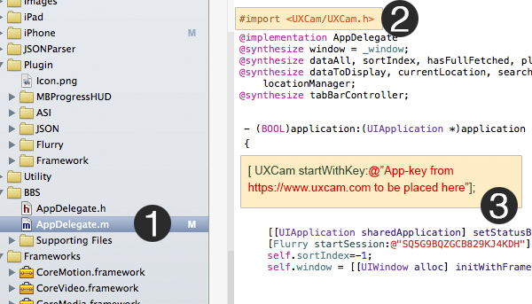
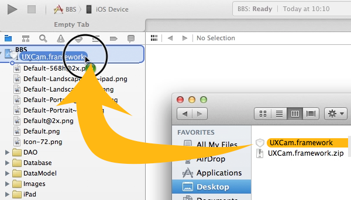
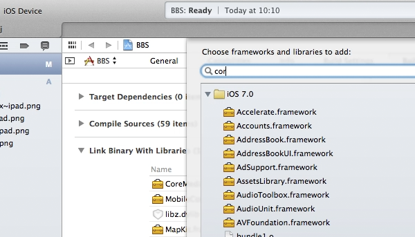

Introduction
FIXUX LETS YOU RECORD USER’S ACTUAL EXPERIENCE WITH YOUR APP, ATTACH THESE RECORDING TO YOUR FAVORITE TOOLS PROVIDING YOU WITH THE RIGHT INSIGHT YOU NEED TO FIX USER EXPERIENCE AND INCREASE CUSTOMER ENGAGEMENT AND RETENTION.
Installation
iOS
Cocoapods
Step 1: Cocoapods Integration
You’ll need to have Cocoapods installed. If you haven’t already, see this page for installation details. Once you have installed Cocoapods, Create file called ‘Podfile’ containing this:
platform :ios, '7.0'
pod 'UXCam'
or add
pod 'UXCam'
to your existing podfile. Then from your Terminal, type the following commands:
$ pod install
Now open the XCode Workspace generated and complete Step 2: ‘Start UXCam’.
Step 2: Start UXCam
Import the UXCam Agent header at the top of your AppDelegate.m:
#import <UXCam/UXCam.h>
Add this call as the first line of your application:didFinishLaunchingWithOptions: method
[UXCam startWithKey:@"APP KEY"];

Manual
Step 1: Manual Integration
(a): Download
Download latest SDK.
(b): Integration

Unzip the downloaded file and drag the “UXCam.framework” from the downloaded UXCam folder into your Xcode project (dropping it onto your Project in the Project Navigator window). When prompted, select “Copy items into destination…” and “Create folder references…”

Then, add these following libraries to your Linker settings. Click on your Project in the Project Navigator window, under Targets select your app, and click the Build Phases tab.
Open the “Link Binary with Libraries” list. Click the plus sign (+) and add :-
- AVFoundation
- CoreGraphics
- CoreMedia
- CoreVideo
- MobileCoreServices
- QuartzCore
- SystemConfiguration
Step 2: Start UXCam
Import the UXCam Agent header at the top of your AppDelegate.m:
#import <UXCam/UXCam.h>
Add this call as the first line of your application:didFinishLaunchingWithOptions: method
[UXCam startWithKey:@"APP KEY"];
Android
Android Studio
JAR
jar jar
AAR
aar aar
MAVEN
maven maven
Eclipse
eclipse